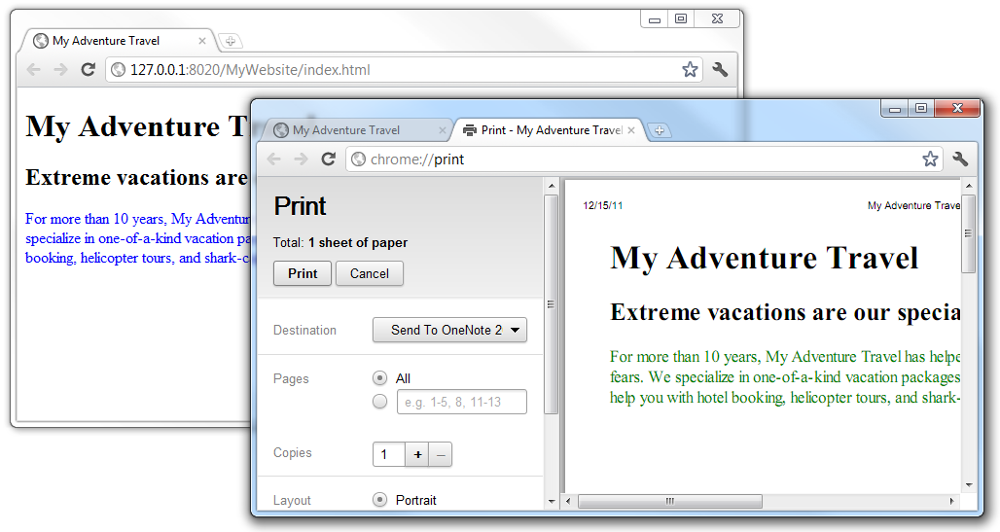

Introduction
- HTML: Structure of web pages; moreover
- HTML elements have a default presentation
-
Some elements and attributes are used for presentation (physical
formatting)
<em><font size=10 color=red> test </font></em>
No reusability
- Tremendous repeated formatting tags
Structure and Formatting mixed up mess
Introduction (Contd.)
- (in HTML) Separation between
- Content & Structure
- Presentation
- Content & Structure are specified by XHTML tags
-
Cascading Style Sheet (CSS) defines the presentation and style of web
pages
- How elements are presented in web pages!!
- Override the default presentation of elements
-
CSS is optional, if presentation is not specified, browser uses its
own default presentation for HTML elements
Introduction (Contd.)
- Created by Hakon Wium Lie of MIT in 1994
-
The W3C standards (CSS 1,2,3,4) to control visual presentation of web
pages
- Uses a different syntax than HTML/XHTML
- Works with the common visual browsers
-
Greatly simplifies visual design, site management and content maintenance
Introduction (Contd.)
- Advantages
- Reuse styling rules in multiple pages
- Make easier site management
- Saves time
- More control over layout
- Styles + JavaScript dynamic presentation
- Multiple presentation of the same content
- Media dependent presentation
CSS Styles
- Styles are defined by rules
- Selector + Declaration block (property + value)
- General structure of style rules
selector1, ..., selectorN {
property1: value1, ..., valueN;
property2: value1, ..., valueN;
...
/* this is comment */
}

Selectors
- Tag based
- Class based
- ID based
- DOM tree based
- Attribute based
- …
- We will discuss later in more details
Sample Properties
- Font:
- font-family
- font-size
- font-style
- Text:
- text-align
- color
- letter-spacing
- word-spacing
- Background:
- background-color
- background-image
Sample Properties (Contd.)
- Table
- List
- Box Model
- border-color, border-style, border-width
- width, ...
- background-color, ...
- Position: bottom, left, right, ...
Values
- Values depend on property
- Predefined keywords
- left, right, italic, none, ...
- Color
- red, green, blue, ...
-
#XXYYZZ where 00 <= XX,YY,ZZ <=FF
-
rgb(XX, YY,
ZZ) where 0 <= XX,YY,ZZ <=255
- ...
- Size & Length & Font-size & ...
- Absolute: cm, in, mm, pt, px, …
-
Relative: %, em, ex, rem, vw, vh, vmin, vmax, … (we discuss later)
Inline Styles
- Add styles to each tag within HTML file
- Used to format a single HTML element
- Selector is implicitly specified
- Style is given as an attribute
<h1 style="color:red; font-family: sans-sarif">Test Heading 1</h1>
Element based
- Hard to update
- Violates structure-style sepration
- (Only for) styling exceptional element
Internal (embed) Styles
- A style is used in the entire HTML file
-
Used to control style of elements (e.g. all h1) in a single web page
<head>
<style type="text/css">
h1 {
color: red;
font-family: sans-serif;
}
</style>
</head>
External Styles
- A text file containing style rules
- Used to control style in multiple web pages
- Example
- A text document with
.css extension contains
h1, h2, h3, h4, h5, h6 {
color: #FF0000;
font-family: sans-serif;
}
External Styles (Contd.)
-
External style file is used in HTML web page through linking it to the web
page
<head>
<title>External CSS</title>
<link href="external_css.css" rel="stylesheet" type="text/css" />
</head>
External Styles Advantages
- Avoid repeating styles for each page
- It is easier to update whole site
- CSS can be cached independent of HTML
- Different style sheets can be attached to the same document
- Personalized & Customization & Media dependent
- A style sheet can import and use styles from other style sheets
Media Depended Presentation
- Web page presentation can be depended on media
- Available media types
<style type="text/css" media="screen">
<link rel="stylesheet" href="style.css" media="all">
Media Depended Presentation

Media Depended Presentation

CSS Selectors
- *: universal selector (all elements)
- HTML Tags
- Attribute based
- Special attributes
- Class based: per-class style
- ID based: per-element styles
- In combination with tag names
- In general attribute name, value, ...
- DOM tree based
- Child & Descendant, Sibling, ...
- Pseudo-class & Pseudo-element
-
We may not need all these selectors at the beginning; however, they are
powerful tools that simplify complex CSS rules
Element Selector
<head>
<style type="text/css">
* {color: blue}
h1 {text-decoration: underline}
p {font-style: italic}
</style>
</head>
<body>
<h1> Testing Element Selector </h1>
<p> This is a paragraph </p>
</body>
id Selector
<h2 id="blue_heading"> This is blue heading </h2>
<h2 id="red_heading"> This is red heading </h2>
Define style for each ID
#blue_heading {color:blue;}
#red_heading {color:red;}
class Selector
<h3 class="blue_heading"> This is blue heading 1</h3>
<h3 class="red_heading"> This is red heading 1</h3>
<h3 class="blue_heading"> This is blue heading 2</h3>
<h3 class="red_heading"> This is red heading 2</h3>
Define style of each class
.blue_heading {color:blue;}
.red_heading {color:red;}
Combined Element & Class Selector
<style type="text/css">
.all {color: blue;}
h2.all {color: red;}
h3.all {color: black;}
</style>
<h1 class="all"> Heading 1 </h1>
<h2 class="all"> Heading 2 </h2>
<h3 class="all"> Heading 3 </h3>
<h4 class="all"> Heading 4 </h4>
<h5 class="all"> Heading 5 </h5>
Multiple Classes
<style type="text/css">
.red {color:red;}
.bold {font-weight:bold;}
</style>
<body>
<p class="red"> This is a red paragraph </p>
<p class="bold"> This is a bold paragraph </p>
<p class="red bold"> This is a red-bold paragraph </p>
</body>
<div> and
<span> in CSS
<div class="green_color">
This is a green div. But, <span id="red_color"> this is red </span> using span.
</div>
CSS
.green_color {
color:green;
font-weight:bold;
}
#red_color {color:red;}
Attribute Selector
<p> A paragraph without "id" attribute </p>
<p myid="test1"> A paragraph with id=test1 </p>
<p myid="test2"> A paragraph with id=test2 </p>
<p myid="test3"> A paragraph with id=test3 </p>
p[myid] {color:red}
p[myid="test3"] {color:blue}
Pseudo-Classes
- HTML elements have states
- (Almost) all elements: mouse over, clicked, ...
- <a>: Normal (Unvisited), Visited, ...
- Pseudo-classes are used to style the states
- active, first-child, last-child, ...
- E.g.
a:link {color:#FF0000}
a:visited {color:#00FF00}
p:hover {color:#FF00FF}
a:active {color:#FFFFFF}
Pseudo-Elements
- first-letter (in heading & paragraph)
p::first-letter {font-size: 200%;}
first-line (in paragraph)
p::first-line {color: red;}
selection
::selection {font-size: 2em;}
- before & after
-
Mainly used with
{ content: url(something); }
to insert an object before & after and element
.google::after{
content: url("google_logo.gif");
}
Pseudo-Classes/Elements (Contd.)
<style type="text/css">
p code::first-child {color: blue;}
p::first-letter {font-size: 200%;}
p::first-line {color: red;}
.google::after{content:url("google_logo.gif");}
</style>
<p>
This is the first <code> code </code>,
this is second <code> code </code>. <br />
<span class="google">Google</span>
is a big company.
</p>
DOM based: Child Selector
- When we want to select elements which are inside other elements
-
To select a (direct) child of parent parent > child {property:
value;}
<style type="text/css">
ol {color: red;}
ol > li {color: blue;}
</style>
<ol>
<li> Item 1 </li>
<ul> <li> Netsted 1</li> </ul>
<li> Item 2 </li>
<dl> <dt> def: <dt> <dd> Definition </dd>
</dl>
</ol>
DOM based: Descendant Selector
- To select descendant of a tag tag descendant {property: value;}
<style type="text/css">
ol {color: red;}
ol li {color: blue;}
</style>
<ol>
<li> Item 1 </li>
<ul> <li> Netsted 1</li> </ul>
<li> Item 2 </li>
<dl> <dt> def: <dt> <dd> Definition </dd>
</dl>
</ol>
DOM based: Sibling Selector
- When we want to select elements which are next to other elements
- To select tag2 which is immediate successive sibling of tag1
tag1 + tag2 {property: value;}
To select tag2 which is a successive sibling of tag1
tag1 ~ tag2 {property: value;}
DOM based: Sibling Selector
h2+p {color:red;}
h3~p {color:green;}
<h2> Heading 2 </h2>
<p> Next sibling of h2 </p>
<p> Another sibling of h2 </p>
<h3> Heading 3 </h3>
<p> Next sibling of h3 </p>
<p> Another sibling of h3 </p>
CSS Selectors Summary
- *: universal selector (all elements)
- HTML Tags: h1, …, h6, p, li, table, tr, …
- Class: .
- ID: #
- General attribute: []
- Child: >
- Descendant: (space)
- Sibling: + ~
- Pseudo-class: active, hover, …
- Pseudo-element: first-child, before, after, …